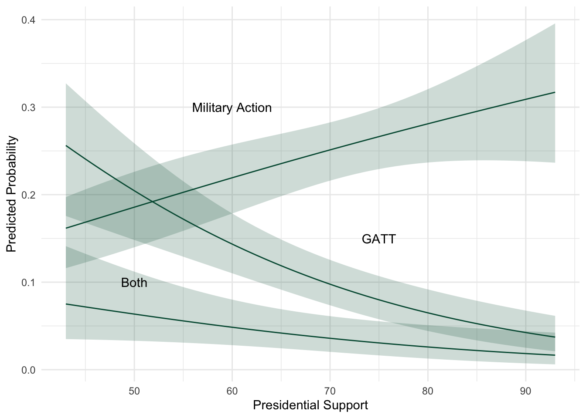
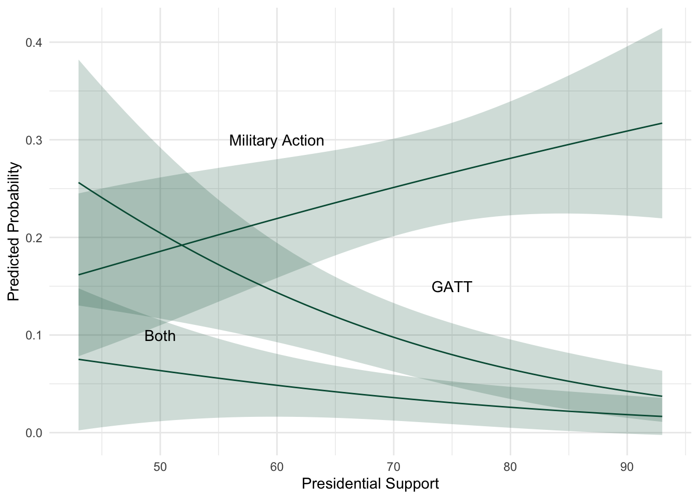

| Dependent variable: | |||
| 1 | 2 | 3 | |
| (1) | (2) | (3) | |
| unemp2 | 0.089 | 0.256** | 0.609*** |
| (0.077) | (0.106) | (0.157) | |
| pressupp | 0.009 | -0.043*** | -0.035* |
| (0.009) | (0.012) | (0.018) | |
| pelect | 0.167 | 0.278 | -0.521 |
| (0.265) | (0.330) | (0.602) | |
| approval | 0.017* | 0.023* | 0.037* |
| (0.010) | (0.013) | (0.021) | |
| Constant | -2.996*** | -1.560 | -5.935*** |
| (1.058) | (1.392) | (2.282) | |
| Akaike Inf. Crit. | 994.056 | 994.056 | 994.056 |
| Note: | p<0.1; p<0.05; p<0.01 | ||
Multiple Choices
It’s common to have data where individuals choose among multiple, unordered outcomes:
- voters choosing among candidates.
- consumers choosing among products.
- job choice.
- foreign policy choice.
Unordered choices
The multinomial and conditional logit models are robust, easy to estimate and interpret, and less punitive than some others if you violate assumptions.
- Any outcome can be ordered; not every outcome should be ordered.
- If we use an ordered model on unordered data, the parameters are likely to be biased and not to make sense
- If we use a unordered model on ordered data, we are neglecting to use some of the information in the y variable so our model may be inefficient, but the consequences are not as severe.
Probability Model
Following Long (pp. 152ff):
Suppose an unordered, discrete variable \(y = j\) where \(j = 1,2 \ldots\). Let \(Pr(y=j) = x\beta_j +\epsilon\) so the probability of any value of \(y\) is a function of \(x_i\) and a vector of outcome-specific coefficients, \(\beta_j\). Because these are probabilities, they cannot be negative, so transform \(exp(x\beta_j)\) - but now the sum of these over all values of \(j\) exceed 1. So divide by the sum of all the categories, and now we sum to 1 : \(\frac{exp(x\beta_j)}{\sum_{j=1}^{J} exp(x\beta_j)}\)
- But \(\frac{exp(x\beta_j)}{\sum_{j=1}^{J} exp(x\beta_j)}\) does not suggest a single set of solutions \(\beta_j\), so is not identified.
- The usual solution is to assume one \(\beta_j=0\).
- Recalling that \(j = 1, 2, \ldots\), we restrict the first category (\(\beta_1=0\)), and rewrite \(\frac{exp(x\beta_j)}{\sum_{j=2}^{J} exp(x\beta_j)}\).
This means \(y=1\) is the reference category, so now \(\beta_j\) is compared to \(\beta_1\) as if the quantity is now \(\beta_j - \beta_1\). This is, after all, the comparison we usually make: that the effect of \(x_i\) is \(\beta_j\) relative to the excluded category.
This leaves us with:
\[Pr(y=1) = \frac{1}{1+ \sum_{j=2}^{J} exp(x\beta_j)} \]
for \(j=1\), and for \(j>1\), we have:
\[Pr(y=j) = \frac{exp(x\beta_j)}{\sum_{j=2}^{J} exp(x\beta_j)}\]
Note constraining \(\beta_1 = 0\) is arbitrary - we can set any of the categories as the reference.
An alternative motivation
Another, more interesting way, to motivate models for choices over outcomes is from a rational choice framework. We consider individuals making choices over outcomes. Those choices are informed by their utilities for the outcomes.
Discrete choice, random utility
An individual’s utility for each choice is given by
\[ U_{i,j}= \mu_{i,j} + \varepsilon_{i,j} \]
where the subscripts indicate the \(i^{th}\) individual and the \(j^{th}\) outcome. Each individual’s utility for each outcome is a function of a systematic component, \(\mu_{i,j}\) and a stochastic component \(\varepsilon_{i,j}\). We can parameterize the systematic component as a function of some variables, ${i,j} =x{i,j} $ :
\[ U_{i,j}=x_{i,j} \beta + \varepsilon_{i,j} \nonumber \]
Some variables, \(x\) have \(\beta\) effect on \(i\)’s utility for outcome \(j\). Moreover, each individual has a complete set of preferences over the \(J\) outcomes and those preferences are transitive. Each individual makes choices to maximize their utility, thus comparing choices \(j, k \ldots J\) in a pairwise fashion:
\[Pr(Y=j) = Pr(U_{i,j}>U_{i,k}) \\ = Pr(x_{i,j} \beta + \varepsilon_{i,j} > x_{i,k}\beta + \varepsilon_{i,k})\\ = Pr(\varepsilon_{i,j}-\varepsilon_{i,k} > x_{i,k} \beta -x_{i,j} \beta ) \]
If the difference in the random components of \(j\) and any other outcome, \(k\) is greater than the difference between the systematic components, then \(j\) maximizes \(i\)’s utility. Looking at the last inequality above, we can see this will happen when \(\varepsilon_{i,j}\) is big, when \(\beta x_{i,j}\) is big, or both.
To estimate this, we have to make an assumption about how the errors are distributed. The way we’ve derived the model, the errors are actually the difference between the stochastic parts of outcomes \(i, j\):
\[ F(\varepsilon_{i,j}) = exp[-exp(-\varepsilon_{i,j})] \nonumber \]
assume \(\varepsilon_{i,j}\)s are i.i.d Type 1 generalized extreme value (Gumbel); if the errors are i.i.d., their difference is logistic:
The probability \(Y=j\) is
\[ Pr(Y=j) = \frac{e^{X_i \beta_j }}{\sum \limits_{j=1}^{J} e^{X_i\beta_j}} \nonumber \]
As above, the model is not identified since there is no reference category. So we typically constrain \(\beta_{i,j=1}=0\) and estimate the remaining \(J-1\) categories:
\[ Pr(Y=j) = \frac{e^{x_i \beta_j }}{1+\sum \limits_{j=2}^{J} e^{x_i\beta_k }} \nonumber \\ Pr(Y=1) = \frac{1}{1+\sum \limits_{j=2}^{J} e^{\beta_k x_i}} \nonumber \]
If \(J=2\), the model is the binary logit - so the binary logit is a special case of the CL or MNL models.
This motivation is nice because it links the likelihood function to a simple, formal model where individuals make choices over ordered preferences.
- individual \(i\)
- chooses among \(j\) alternatives
- let \(d=1\) if \(y_i = j\), else zero.
- \(Pr(Y=j) = \frac{e^{x_i \beta_j }}{\sum \limits_{j=1}^{J} e^{x_i\beta_k }}\)
Likelihood - Multinomial Logit
\[ \mathcal{L} ( \beta ) = \prod _ { i=1}^{N} \prod_ { j=1}^{J} Pr \left( y _ {i } = j | x _ { i } \right) ^ { d _ { i j } } \]
\[ \ln \mathcal{L} ( \beta ) = \sum _ { i=1}^{N} \sum_ { j=1}^{J} d _ { i j } \ln Pr \left( y _ { i } = j | x _ { i } \right) \]
\[ \ln \mathcal{L} ( \beta ) = \sum _ { i=1}^{N} \sum_ { j=1}^{J} d _ { i j } \ln \left( \frac { \exp \left( x _ { i } \beta_j \right) } { \sum _ { k } \exp \left( x _ { i } \beta_j \right) } \right) \]
Extending the Binary Model
The logistic CDF is \[ Pr(Y=1)=\frac{e^{x_i\beta}}{1+e^{x_i\beta}}\nonumber \]
We use this to represent a binary choice.
Extending this to a trichotomous choice, say among chocolate, vanilla and strawberry icecream is easy:
\[ Pr(Y=chocolate)=\frac{e^{x_i\beta_c}}{1+e^{x_i\beta_c}+e^{x_i\beta_v}} \nonumber \]
assuming strawberry is the reference category.
The n-chotomous choice is also easy:
\[ Pr(Y=j)=\frac{e^{x_i\beta_j}}{1+\sum\limits_{j=1}^{J}e^{x_i\beta}} \nonumber \]
You should be getting the idea the binary logit model is a special case of the more general choice model with errors distributed i.i.d. logistic.
You should also see that interpretation is a straightforward extension of the binary logit.
MNL Estimation
To illustrate the MNL and CL models, I’m going to use data from a paper on foreign policy substitution. The \(y\) variable represents the foreign policy choice the US president makes given domestic conditions; it takes on 4 values distributed as follows:
- 0 = no action = 61.13 percent the observations
- 1 = MID only = 22.6 percent
- 2 = GATT only = 11.8 percent
- 3 = both MID and GATT = 4.3 percent
The data are structured with one observation for each US-month between 1945 and 1990, so for each observation, we observe the policy the president selects, 0, 1, 2, or 3. The variables of interest vary across observations (US-months) but not across outcomes; thus, the data structure and the nature of the independent variables suggest MNL is appropriate.
The main expectation here is that the extent of support in Congress for the President’s legislative agenda will affect foreign policy choice - stronger Presidents have greater latitude to choose more costly policies (e.g. military force). The data include a measure of presidential support in Congress, the unemployment rate, the president’s approval rating, and whether the president is in an election year.
Recalling the \(y\) variable has 4 categories, the model estimates 3 sets of coefficients, one for each category relative to the reference category. By default, the reference category is the one with the lowest value, in this case, no action. This is something we can change to facilitate interpretation. The coefficients are interpreted as the effect of the variable on the probability of choosing the category relative to the reference category. So you can see presidential support in Congress decreases the chances of GATT action or both military and GATT action relative to doing nothing.
Reference Category
| Dependent variable: | ||||||
| 1 | 2 | 3 | 0 | 1 | 2 | |
| (1) | (2) | (3) | (4) | (5) | (6) | |
| unemp2 | 0.089 | 0.256** | 0.609*** | -0.609*** | -0.520*** | -0.354** |
| (0.077) | (0.106) | (0.157) | (0.157) | (0.164) | (0.177) | |
| pressupp | 0.009 | -0.043*** | -0.035* | 0.035* | 0.044** | -0.008 |
| (0.009) | (0.012) | (0.018) | (0.018) | (0.019) | (0.020) | |
| pelect | 0.167 | 0.278 | -0.521 | 0.521 | 0.688 | 0.800 |
| (0.265) | (0.330) | (0.602) | (0.602) | (0.623) | (0.644) | |
| approval | 0.017* | 0.023* | 0.037* | -0.037* | -0.020 | -0.014 |
| (0.010) | (0.013) | (0.021) | (0.021) | (0.022) | (0.023) | |
| Constant | -2.996*** | -1.560 | -5.935*** | 5.935*** | 2.938 | 4.373* |
| (1.058) | (1.392) | (2.282) | (2.282) | (2.381) | (2.517) | |
| Akaike Inf. Crit. | 994.056 | 994.056 | 994.056 | 994.056 | 994.056 | 994.056 |
| Note: | p<0.1; p<0.05; p<0.01 | |||||
Compare the coefficients in the first 3 columns to those in the last 3 columns; notice their similarities but changed signs. Really, changing the reference category has only modest interpretive value. This is especially true because interpreting coefficients is full of pitfalls in the MNL model because, since the effects of variable on one outcome are relative to others, even signs can be misleading. It’s even more essential to compute MNL effects than in most ML cases.
Interpretation
Predicted probabilities are straightforward to compute - they’re an easy extension of the binary logit model.
\[P(Y=j) = \frac{e^{\beta_{j}'x_{i}}}{1+\sum\limits_{j=1}^{J}e^{\beta_{j}'x_{i}}} \\ \text{so}~~ P(Y=1) = \frac{e^{X_{1}\beta_1}}{1 + e^{X_{1}\beta_1} + e^{X_{2}\beta_2} + e^{X_{3}\beta_3}} \nonumber \]
Predictions
Let’s look at some predictions from the first model.
code
X <- as.matrix(expand.grid(
intercept= 1,
unemp2 = median(fpdata$unemp2, na.rm=TRUE),
pressupp = seq(43,93, length.out = 50),
pelect = 0,
approval = median(fpdata$approval, na.rm=TRUE)
))
xb <- X %*% t(coef(mnl1))
xb <-data.frame(xb)
probs <- exp(xb$X1)/(1+exp(xb$X1)+exp(xb$X2)+exp(xb$X3))
# decompose vcov matrix
v1 <- as.matrix(vcov(mnl1)[1:5,1:5])
v2 <- as.matrix(vcov(mnl1)[6:10,6:10])
v3 <- as.matrix(vcov(mnl1)[11:15,11:15])
# compute standard errors
se1 <- sqrt(diag(as.matrix(X) %*% v1 %*% t(X)))
se2 <- sqrt(diag(as.matrix(X) %*% v2 %*% t(X)))
se3 <- sqrt(diag(as.matrix(X) %*% v3 %*% t(X)))
# compute boundary components
ub1 <- exp(xb$X1 + (1.96 * se1))
lb1 <- exp(xb$X1 - (1.96 * se1))
ub2 <- exp(xb$X2 + (1.96 * se2))
lb2 <- exp(xb$X2 - (1.96 * se2))
ub3 <- exp(xb$X3 + (1.96 * se3))
lb3 <- exp(xb$X3 - (1.96 * se3))
# compute probabilities
pmid <- exp(xb$X1)/(1+exp(xb$X1)+ exp(xb$X2) + exp(xb$X3))
pgatt <- exp(xb$X2)/(1+exp(xb$X1)+ exp(xb$X2) + exp(xb$X3))
pboth <- exp(xb$X3)/(1+exp(xb$X1)+ exp(xb$X2) + exp(xb$X3))
# compute boundaries
pubmid <- ub1/(1+ub1+ub2+ub3)
plbmid <- lb1/(1+lb1+lb2+lb3)
pubgatt <- ub2/(1+ub1+ub2+ub3)
plbgatt <- lb2/(1+lb1+lb2+lb3)
pubboth <- ub3/(1+ub1+ub2+ub3)
plbboth <- lb3/(1+lb1+lb2+lb3)
# data frame
probs <- data.frame(X,pmid, pgatt, pboth, pubmid, plbmid, pubgatt, plbgatt, pubboth, plbboth)
#plot "#005A43", "#8C8C8C"
ggplot(probs, aes(x = pressupp)) +
geom_ribbon(aes(ymin = plbmid, ymax = pubmid), fill = "#005A43", alpha = 0.2) +
geom_ribbon(aes(ymin = plbgatt, ymax = pubgatt), fill = "#005A43", alpha = 0.2) +
geom_ribbon(aes(ymin = plbboth, ymax = pubboth), fill = "#005A43", alpha = 0.2) +
geom_line(aes(y = pmid), color = "#005A43") +
geom_line(aes(y = pgatt), color = "#005A43") +
geom_line(aes(y = pboth), color = "#005A43") +
labs(x = "Presidential Support", y = "Predicted Probability", color = "Choice") +
theme_minimal()+
annotate("text", x = 60, y = 0.3, label = "Military Action") +
annotate("text", x = 75, y = 0.15, label = "GATT") +
annotate("text", x = 50, y = 0.1, label = "Both")
The plot shows the predicted probabilities of each choice as a function of presidential support in Congress. You can see that as support increases, the probability of military action increases, while the probability of GATT action decreases. The probability of both military and GATT action is relatively low and doesn’t change much with support. There appears to be a tradeoff between military and economic action as the president finds greater success in Congress.
If you look at the code, you’ll notice I’ve computed the predictions by hand. The predict function works only partially and poorly with choice model implementations in R. In this plot, I’ve computed the ML standard errors (\(\sqrt(diag(XVX'))\)). In the plot below, I’ve computed the delta method standard errors - the confidence bands a slightly larger, but the inferences are similar. In general, the delta method standard errors are preferable in choice models like this.
code
# compute delta standard errors as p*(1-p)*(XVX')
deltamidub <- pmid + (1.96 * (pmid*(1-pmid)*se1))
deltamidlb <- pmid - (1.96 * (pmid*(1-pmid)*se1))
deltagattub <- pgatt + (1.96 * (pgatt*(1-pgatt)*se2))
deltagattlb <- pgatt - (1.96 * (pgatt*(1-pgatt)*se2))
deltabothub <- pboth + (1.96 * (pboth*(1-pboth)*se3))
deltabothlb <- pboth - (1.96 * (pboth*(1-pboth)*se3))
# plot with delta method confidence intervals
ggplot(probs, aes(x = pressupp)) +
geom_ribbon(aes(ymin = deltamidlb, ymax = deltamidub), fill = "#005A43", alpha = 0.2) +
geom_ribbon(aes(ymin = deltagattlb, ymax = deltagattub), fill = "#005A43", alpha = 0.2) +
geom_ribbon(aes(ymin = deltabothlb, ymax = deltabothub), fill = "#005A43", alpha = 0.2) +
geom_line(aes(y = pmid), color = "#005A43") +
geom_line(aes(y = pgatt), color = "#005A43") +
geom_line(aes(y = pboth), color = "#005A43") +
labs(x = "Presidential Support", y = "Predicted Probability", color = "Choice") +
theme_minimal()+
annotate("text", x = 60, y = 0.3, label = "Military Action") +
annotate("text", x = 75, y = 0.15, label = "GATT") +
annotate("text", x = 50, y = 0.1, label = "Both")
MNL
One thing you might have noticed but not thought about is the structure of the data we’ve been using for the MNL model. Each observation is an individual, that individual’s choice, and the characteristics of that individual. So in these data, each line is a US month, what foreign policy choice the US makes, and characteristics of the US.
What if we have characteristics of the outcomes, say, that some foreign policy choices are more risky than others? How could those enter the model?
Conditional Logit
The CL model generalizes the MNL model by permitting characteristics of the outcomes to vary on the right side. - The CL likelihood is identical to the MNL likelhood. - Specified correctly, the two models are identical. - The difference? How the data are structured. - The CL is a logit with fixed effects denoting which group an observation belongs to.
Multinomial v. Conditional Logit
The distinction between CL/MNL has to do with the nature of our expectations about how \(X\) influences the choices in \(y\). We can consider two types of effects (and the two types of data they would require).
| Independent Variable | With respect to cases | With respect to \(Y\) | Model | # of \(\widehat{\beta}\)s |
| Characteristics of the individual | Vary across cases (individuals) | Constant across choices (\(Y=j\)) | MNL | \(j-1\) |
| Characteristics of the outcome \(j\) | Constant across cases (individuals) | Vary across outcomes \(J=1 ~\mbox{to}~ m\) | CL | 1 |
| Individual and case characteristics | Vary across cases | Vary across outcomes \(J=1 ~\mbox{to}~ m\) | Modified CL | \(\beta_{x}\), \(\beta_{0}\) \(\beta_{x,0}\) |
The multinomial logit model allows \(X\) to vary across cases (individual observations), but not across outcomes.
Suppose we model vote choice, and we believe that party affiliation and education influence whether an individual votes for Perot, Bush, or Clinton (in 1992). Party affiliation will vary across individual voter, but not across choice; put another way, a Democrat is a Democrat regardless of whether we are considering whether he votes for Bush (0), or Clinton (1), or Perot (2). Education, similarly, varies across individual but not across choice.
| Voter | Choice | Party ID | Education | ||
| 1 | 0 | R | 14 | ||
| 2 | 0 | R | 12 | ||
| 3 | 2 | D | 6 | ||
where we have on line of data for each individual/case/voter, choice represents the value of \(y\) that voter selects (0,1,2). Notice that our two independent variables do not vary across a voter’s alternatives or choice, but they do vary across voters; voter 1 is a smart republican while voter 3 is a not-so-smart democrat. These data are appropriate for a multinomial logit model; we’ll get \(j-1\) estimates of \(\beta\) for each independent variable representing the effect of \(x_{i}\) on the probability \(y=j\) rather than \(y=k\).
CL allows the independent variables to vary for each outcome in \(y\), and with a bit of tweaking, can also allow independent variables that vary across individuals but not outcomes.
| Voter | Alternative | Choice | D | Party ID | Education | Spending | Campaign Stops |
| 1 | 0 | 1 | 0 | R | 14 | 11 | 0 |
| 1 | 1 | 1 | 1 | R | 14 | 45 | 2 |
| 1 | 2 | 1 | 0 | R | 14 | 54 | 2 |
| 2 | 0 | 0 | 1 | D | 12 | 11 | 1 |
| 2 | 1 | 0 | 0 | D | 12 | 45 | 6 |
| 2 | 2 | 0 | 0 | D | 12 | 54 | 4 |
| 3 | 0 | 2 | 0 | D | 6 | 11 | 2 |
| 3 | 1 | 2 | 0 | D | 6 | 45 | 3 |
| 3 | 2 | 2 | 1 | D | 6 | 54 | 5 |
the data include variables specific to voters (constant across alternatives), variables specific to alternatives (constant across voters), and variables that vary across both.
In these data, voter is just an identification of the case, alternative lists each possible choice for each voter, choice identifies which alternative the voter selected, D is a dummy variable marking which alternative the voter chooses, party id is obvious, education is voter’s years of schooling; note that these last two vary across individual but not across individual choice. Spending measures the amount each candidate spent in the general election campaign; it varies across choice (candidate) but not across individual. Finally, campaign stops is the number of campaign visits a candidate made to a voter’s home town. This variable varies across both voter and alternative.
You’ll notice these are panel data - the units are the voters, and the panels are by alternatives. This is how the CL makes sense as a logit with fixed effects, grouped by unit, in this case voter.
| Voter | Alternative | Choice | D | Party ID | Education | Spending | Campaign Stops |
| 1 | 0 | 1 | 0 | R | 14 | 11 | 0 |
| 1 | 1 | 1 | 1 | R | 14 | 45 | 2 |
| 1 | 2 | 1 | 0 | R | 14 | 54 | 2 |
| 2 | 0 | 0 | 1 | D | 12 | 11 | 1 |
| 2 | 1 | 0 | 0 | D | 12 | 45 | 6 |
| 2 | 2 | 0 | 0 | D | 12 | 54 | 4 |
| 3 | 0 | 2 | 0 | D | 6 | 11 | 2 |
| 3 | 1 | 2 | 0 | D | 6 | 45 | 3 |
| 3 | 2 | 2 | 1 | D | 6 | 54 | 5 |
Notice that we have information on each possible choice for each voter because the last two variables vary for each choice available to the voter. Thus, the data structure for the conditional model contains all the information in the multinomial data structure plus additional information regarding independent variables pertaining to each choice available to a voter or to specific both to choice and to individual.
The CL and MNL models are estimated identically - they have identical likelihood functions.
What varies between the two are:
- the information contained in the data - do the \(x\)s vary across \(i\) (thus, \(x_i\)) or across \(j\) (thus, \(x_j\)) or both (thus \(x_{i,j}\))?
- the structure of the data - the CL model will by definition have \(J\) times as many observations as the MNL model.
If the disturbances are i.i.d. logistic, then
\[ Pr(Y=j) = \frac{e^{\beta'z_{i,j}}}{\sum\limits_{j=1}^{J}e^{\beta'z_{i,j}}}\nonumber \] where \(z_{i,j}\) has two components, \(x_{i,j}\) and \(w_{i}\) (following Greene’s notation). \(x_{i,j}\) varies across choices (\(j\)) and possibly across individuals (\(i\)) as well; \(w_{i}\) varies across individuals. We refer to variation across {choices} (\(x_{i,j}\)) as attributes of the choices; we refer to variation across individuals (\(w_{i}\)) as characteristics of the individuals.
Taking the last equation and substituting \(x_{i,j}\) and \(w_{i}\) for \(z\), we get
\[ Pr(Y=j) =\frac{e^{(x_{i,j}\beta)} e^{({w_{i}\gamma})}} {\sum\limits_{j=1}^{J}e^{(x_{i,j}\beta)} e^{({w_{i}\gamma})}} \]
and if \(w_{i}\) does not vary across individuals, it drops out of the probability leaving
\[ Pr(Y=j) =\frac{e^{x_{j}\beta}}{\sum\limits_{j=1}^{J}e^{x_{j}\beta}}\nonumber \]
which is the conditional logit because the variables \(x\) vary across outcomes, \(j\). The model estimates one parameter \(\beta\) for \(x_{j}\), indicating the effect of \(x_{j}\) on the probablity of \(Y\). Note that for simplicity, I’ve removed the subscript \(i\) so this \(x\) varies only by outcome, not by individual; also note that it could vary by individual as well.
If \(x\) only varies across individuals, \(i\), and not across outcomes, \(j\), then the function is
\[ Pr(Y=j) =\frac{e^{x_{i}\beta_j}}{\sum\limits_{k=1}^{J}e^{x_{i}\beta_{j}}} \]
so the model estimates a parameter \(\beta_{j}\) for each outcome \(j\) based on a variable that varies across individuals, \(i\). Thus, we can observe the effect of \(x_i\) on the probability \(Y=j\). Note again that the model is identified by constraining one of the \(\beta\)s to zero and making its associated outcome a reference or comparison category; thus, the \(j=1\) rather than zero in the summation limit. This is why we don’t actually estimate \(j\) \(\beta\)s; we estimate \(j-1\) \(\beta\)s in the multinomial or conditional logit model.
After all this effort to distinguish the two models from one another, you’ll be disappointed to learn that the two models, properly specified are identical.
The LLF is :
\[\ln \mathcal{L} ( \beta ) = \sum _ { i=1}^{N} \sum_ { j=1}^{J} d _ { i j } \ln \left( \frac { \exp \left( x _ { i j} \beta \right) } { \sum _ { k } \exp \left( x _ { i j } \beta \right) } \right) \]
Conditional Logit Estimation
Suppose that we want to estimate a model including a variable that varies across outcomes, but not across individuals (in this case, constant across US-months). Say we have a measure of risk inherent in any of the 4 foreign policy actions in the dv:
| year | month | choices | opted | risk | con1 | con2 | con3 | appc1 | appc2 |
| 1945 | 1 | 0 | 1 | .25 | 0 | 0 | 0 | 0 | 0 |
| 1945 | 1 | 1 | 0 | 1 | 1 | 0 | 0 | 81.33334 | 0 |
| 1945 | 1 | 2 | 0 | .5 | 0 | 1 | 0 | 0 | 81.33334 |
| 1945 | 1 | 3 | 0 | 1.25 | 0 | 0 | 1 | 0 | 0 |
| 1945 | 2 | 0 | 1 | .25 | 0 | 0 | 0 | 0 | 0 |
| 1945 | 2 | 1 | 0 | 1 | 1 | 0 | 0 | 81.33334 | 0 |
| 1945 | 2 | 2 | 0 | .5 | 0 | 1 | 0 | 0 | 81.33334 |
| 1945 | 2 | 3 | 0 | 1.25 | 0 | 0 | 1 | 0 | 0 |
| 1945 | 3 | 0 | 1 | .25 | 0 | 0 | 0 | 0 | 0 |
| 1945 | 3 | 1 | 0 | 1 | 1 | 0 | 0 | 81.33334 | 0 |
| 1945 | 3 | 2 | 0 | .5 | 0 | 1 | 0 | 0 | 81.33334 |
| 1945 | 3 | 3 | 0 | 1.25 | 0 | 0 | 1 | 0 | 0 |
Since I’m interested in how an attribute specific variable (risk) influences foreign policy choice, I need to structure the data so it represents that variable against all possible choices; thus, for January 1945, the data have 4 observations, one for each outcome, and risk indicates the level of risk the president incurs with any single choice.